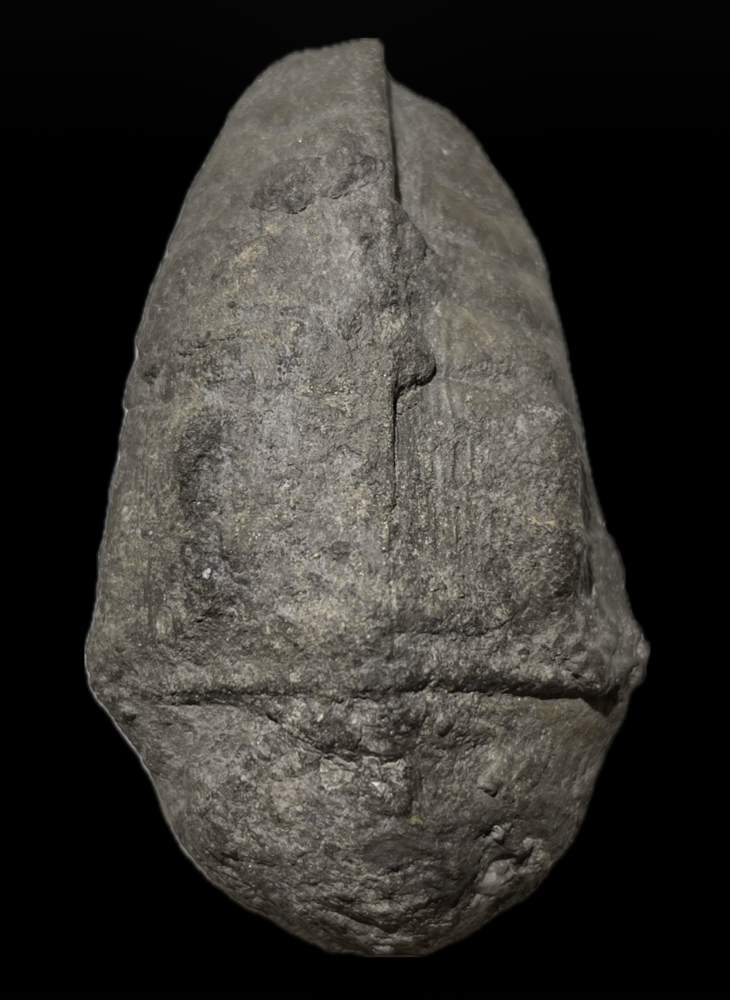
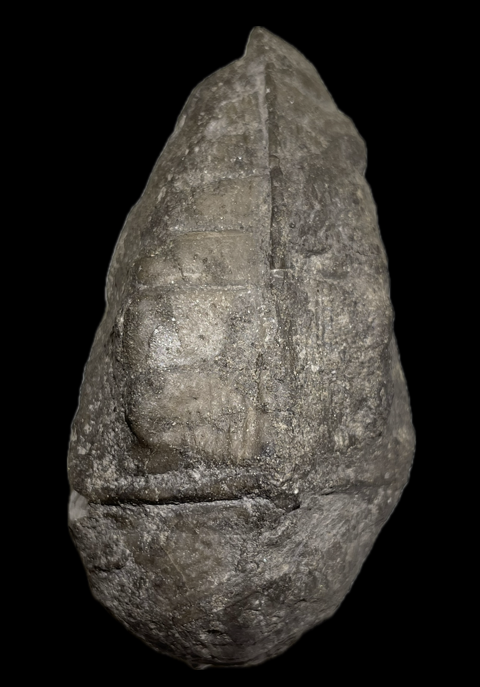
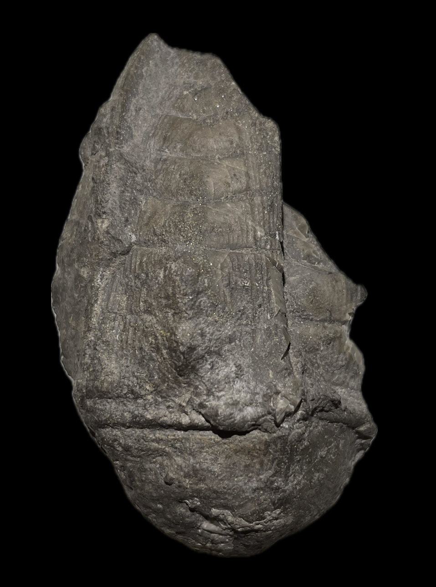
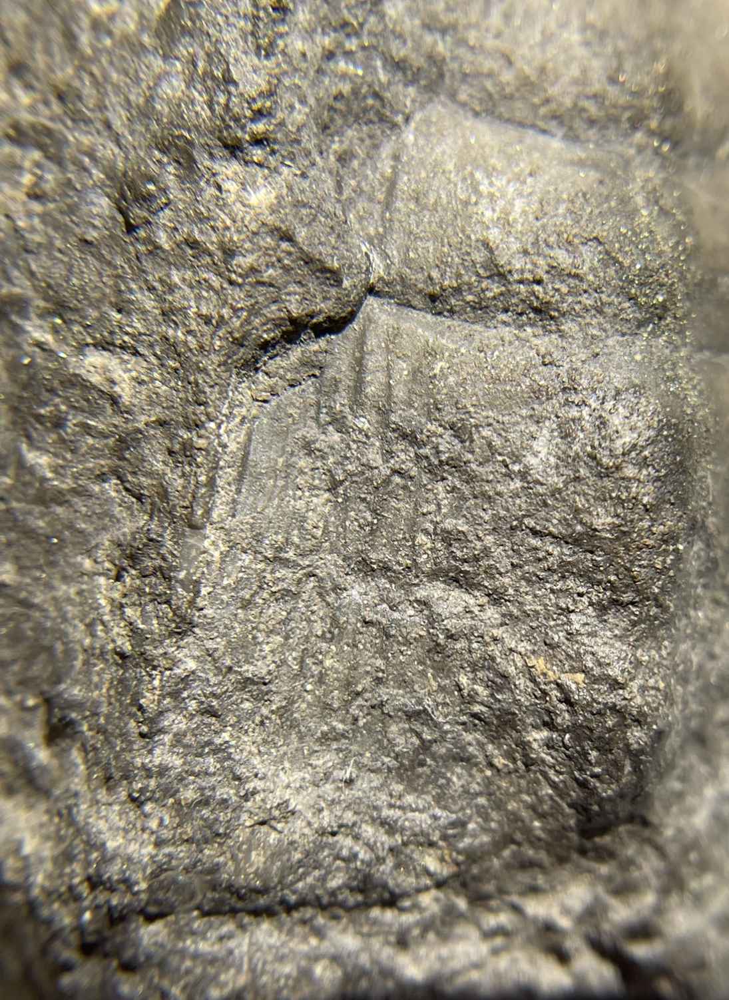
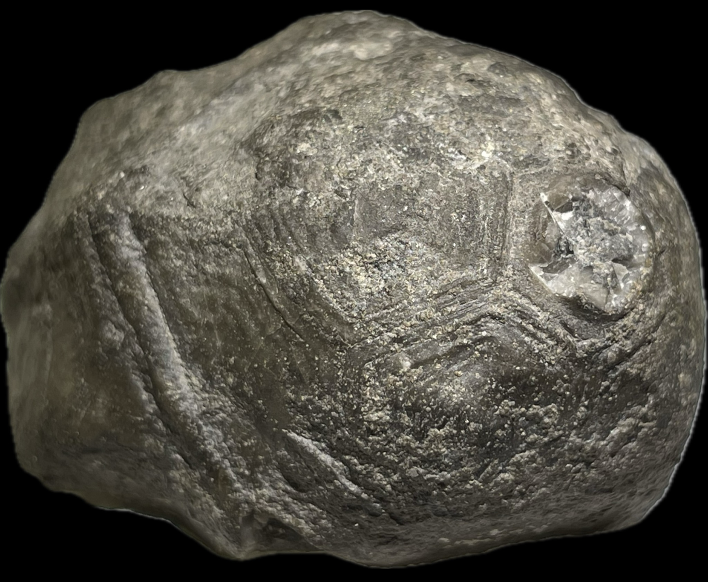

HOME
Halocrinites schlotheimii
• Devonian
• Laskowa Gora Beds
• Holy Cross Mountains, Poland
Size: 7 cm crown
Formerly known as "Cupressocrinites cf. abbreviatus" (Goldfuss 1831); "Abbreviatocrinites abbreviatus" (Goldfuss 1839).
|

|
Copyright © 2024 by Samuel Kim, all rights reserved